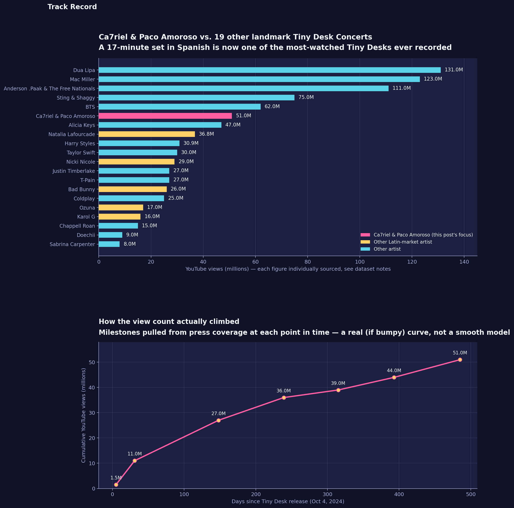

Ca7riel & Paco Amoroso's Tiny Desk Went From 3,000 Daily Streams to One of NPR's Most-Watched Videos Ever
Before October 2024, Argentine duo Ca7riel & Paco Amoroso weren't cracking 3,000 combined daily U.S. streams. Seventeen minutes behind NPR's desk later, their Tiny Desk Concert has pulled in an estimated 51 million YouTube views — enough to sit ahead of Alicia Keys, Taylor Swift, and Harry Styles among the platform's most-cited Tiny Desks, entirely in Spanish.

The dataset
Two datasets. The first covers 20 Tiny Desk Concerts (Ca7riel & Paco Amoroso plus 19 others) with a YouTube view count in millions, an "as of" date, whether the artist is a Latin-market act, and the source it came from. It's a curated sample, not a scrape of NPR's full catalog of 1,200+ Tiny Desk videos — built from NPR/press "most-watched" and "most memorable" roundups (a K104.7 top-5 from Nov 2024, a Georgia Tech Polivision feature on Latin American Tiny Desks from Nov 2025, and individual searches for other widely-discussed performances), so it reads as "how Ca7riel & Paco Amoroso compares to other frequently-cited Tiny Desks," not a definitive all-time leaderboard. The second is a timeline of 7 dated milestones tracking Ca7riel & Paco Amoroso's view count specifically, from 5 days after release through the most recent figure found, each tied to the article it came from. Both CSVs and the chart script are in this repo's data/ and scripts/ folders.
The method
- Searched press coverage and NPR-adjacent roundups for individually reported YouTube view counts on 19 well-documented Tiny Desk Concerts, plus Ca7riel & Paco Amoroso's, recording the source and date for each figure rather than a single live scrape (direct access to YouTube's own view counters wasn't available for this pull).
- Separately, pulled every press-reported view-count milestone for Ca7riel & Paco Amoroso's Tiny Desk specifically, from 5 days after its October 4, 2024 release through the most recent figure found, to trace the shape of its growth rather than just the current total.
- Computed where Ca7riel & Paco Amoroso ranks within the 20-video comparison sample, what share of that sample is Latin-market artists, and how the average daily view rate in the first 5 days compares to the average across the full span since release.
- Built a two-panel chart: a ranked bar comparison colored by Ca7riel & Paco Amoroso / other Latin-market artist / other, and a line chart of the growth timeline.
What it showed
Within this sample, Ca7riel & Paco Amoroso ranks 6th of 20. Their ~51M views sit behind five performances that have had years longer to accumulate views (Dua Lipa, Mac Miller, Anderson .Paak & The Free Nationals, Sting & Shaggy, and BTS), but ahead of Alicia Keys, Natalia Lafourcade, Harry Styles, Taylor Swift, and every other Latin-market act in the sample. Separately, NPR-adjacent coverage pegged the video as the 9th-most-watched Tiny Desk of all time back when it sat at 44M views (November 2025) — a different number than this post's "6th of 20," but that's expected: NPR's claim is against the full 1,200+ video catalog, this post's rank is only within the 20 videos sampled here, and the two figures were measured about three months and 7M views apart. Both point the same direction: a top-10-ever Tiny Desk by most counts.
The growth wasn't a smooth curve. The first five days after release averaged roughly 300,000 views per day — the viral burst, as the video went from a niche Latin-trap release to a cultural moment. Growth then slowed considerably: it took about five more months to go from 11M to 27M, and roughly 24M more has come in the year-plus since, for a full-span average closer to 105,000 views/day. Most of the "virality" was front-loaded; the last year has been a much slower, steadier climb.
The Latin-music thread: 6 of the 20 performances in this comparison — Ca7riel & Paco Amoroso, Natalia Lafourcade, Nicki Nicole, Bad Bunny, Ozuna, and Karol G — are Latin-market artists, a reminder that Tiny Desk's "El Tiny" Latin Heritage Month franchise (which produced this concert) has repeatedly punched above its weight among the platform's most-discussed performances.